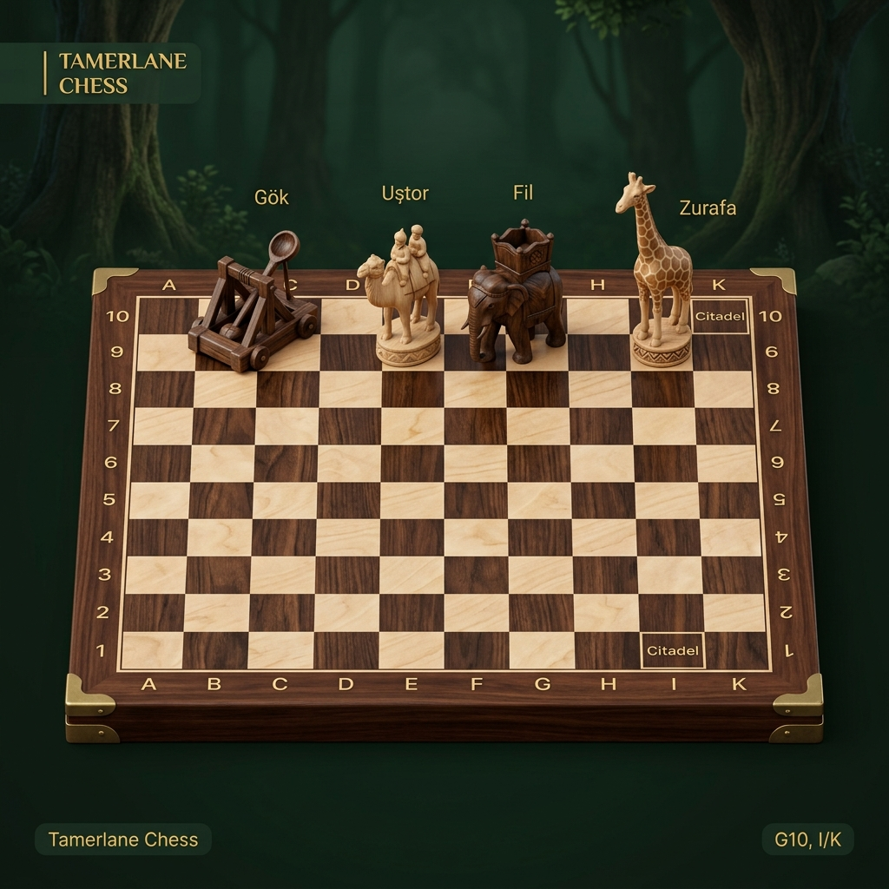

Timur
Satrancı
Stratejini kur, bilgelikle hamle yap. Geçmişi Keşfet, Geleceği Yönet!

Çevrimiçi oyna
Dünyadaki rakiplerle oyna
Bot'a karşı oyna
Yapay zekaya karşı kendini test et
Ekranda oyna
Aynı cihazda arkadaşına karşı oyna